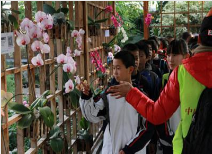
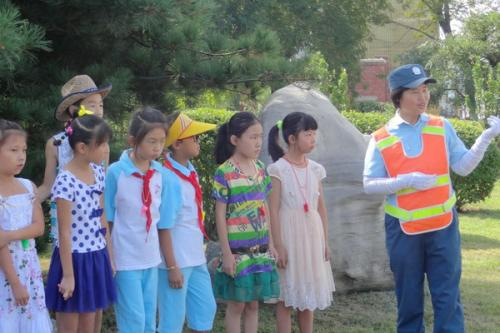
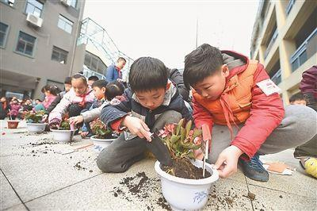
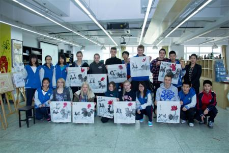

花卉课外活动
活动信息
| 活动主题： | 花卉课外活动 |  |
||||||
| 活动时间： | 2017-12-21~2017-12-25 | 所用课时： | 4 | |||||
| 活动学分： | 12 | 联系电话： | 15200143689 | |||||
| 活动负责： | 石明玮，阙海滔，杨鹏 | 活动类型： | 实践活动 | |||||
| 活动目标： | 本次活动的宗旨是通过学生自己动手栽培植物，观察植物从种子萌发到开花结果的全过程，体验劳动的辛勤与快乐，在进行种植、观察、记录和管理的同时，养成做事细心和持之以恒的好习惯，在科学实践中体会到动手参与的快乐。 | |||||||
| 活动描述： | 1、3月17日，在教师进修学校进行培训。 认真听取了本次竞赛的介绍及矮番茄和百日草以及珊瑚豆的栽培技术。同时查找大量的关于矮番茄和百日草以及珊瑚豆栽培过程中的常见问题和解决方法的资料，以便解决学生在实际操作中遇到的具体问题。 2、3月18~21日，分批对学生进行培训。 由于考虑材料数量有限，同时初一学生又刚学习过植物的相关知识，因此决定参赛范围确定为初一年级学生，学生们非常踊跃，有一百多名学生积极报名，我们两位老师利用课上的时间，对学生从竞赛的目的和要求、矮番茄和百日草以及珊瑚豆的栽培技术、种子发芽的条件、怎样做植物栽培管理记录、怎样做生长观察记录等几个方面进行介绍，并将资料以PPT的形式让学生下载后回去认真学习和理解。3、3月21日，分发植物种子和花盆、营养土、营养液。 4、4月10日开始至6月上旬，对学生的植物栽培情况进行跟踪了解和指导。 （1）涉及种子的萌发问题，对于没有发芽的帮助学生分析原因，如水分的多少、光照、覆土的厚度等，鼓励失败的学生下次继续努力或者自己再去买些种子尝试种植； （2）对于已经萌发的小苗，则帮提醒学生加强管理，比如植物的温度、湿度、光照、水分等的控制，营养液的使用注意事项等。期间不断有学生将栽培成果带到学校展示，我们两位老师都给予及时的指导，学生提出的问题我们也及时地进行解决； 5、6月中旬，根据“中小学生植物栽培实践”评比标准，我们组织学生进行了校内评比，有30多名学生交来了他们栽种的植物以及管理记录、成长记录、心得和体会等，我们从中推选出5名优秀的学生参加成果展示及一、二等奖的评比，其他的学生均获得三等奖。 | |||||||
| 活动地点： | 校园护外植物基地 | |||||||
| 活动班级： |
|
|||||||
教师活动总结
本次参加完活动后，使我受益匪浅。同时也收获了快乐，通过对老师、父亲、母亲等身边的人采访，发现他们也非常支持我们在课间进行有益的游戏活动。但是，对于护外的安全性表示非常的关注，希望我们能玩一些比较安全、健康的小活动。在采访中我还了解到，父辈们小的时候也玩能多有趣的课间小游戏。他们的游戏道具非常简单，容易推广，可是由于时代的发展，有一些没有意义了，需要我们对它们进行改变，让它们更加适合我们玩。综合实践活动给的参加，我的动手动脑能力得到了很好的培养。上网查阅资料，数据整理的知识我也学会了。
- 

- 
- 